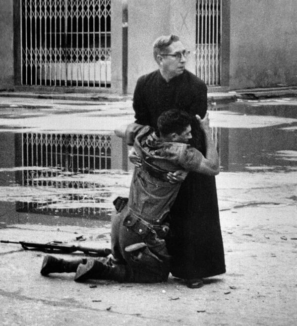

İEl Porteñazo olarak anılan, 2 Haziran 1962’de başlayıp 400’den fazla ölü ve 700 yaralı ile 6 Haziran’da sona eren askeri isyan Venezuela’da zor günlerin geçmesine neden oldu. İsyancı ordu güçleri ve statükoyu destekleyen ordu kuvvetleri arasında çatışmalar başlamış, şehirler el değiştirir vaziyete gelmişti. İsyancıların kalesi olarak görülen Solano bölgesinin düşüşü ile isyan tamamen bastırıldı. İsyan sürerken yaralı bir asker papaza sarılarak son anlarını huzur içinde geçirmeye çalışıyordu. Bu anı fotoğraflayan Héctor Rondón, 1963 yılında Pulitzer Fotoğrafçılık Ödülü’nü kazandı.
